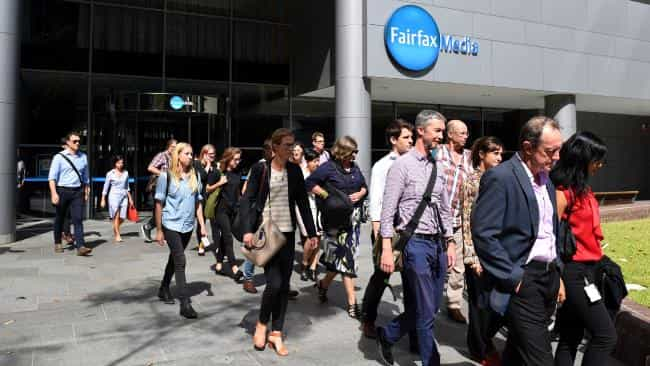

< < < Back
Two Major Media Outlets That Defamed ROK As “Pro-Rape” Are Laying Off Hundreds Of Journalists – Return Of Kings
Only weeks after slandering Roosh and those who had planned to attend the ROK meet-ups, Fairfax Media and Guardian Media Group have announced plans to cut 120 and 250 jobs, respectively. The latter business is also considering compulsory layoffs for the first time in its history, under a very pessimistic three year plan to finally break even.
In February, Fairfax’s Sydney Morning Herald was the first mainstream newspaper to go for Roosh and ROK’s jugular, using outright fabrications and the sloppiest of research. Its sister newspaper in Melbourne, The Age, published the same initial articles as well. Phoebe Moloney, whose “work” inspired a group of SJWs to publicly plan a knife attack against ROK supporters in Sydney, slandered Roosh and ROK readers by claiming they all supported the legalization of rape.
https://twitter.com/rooshv/status/710557389012000769
Very quickly, Fairfax’s newspapers were joined in the reporting of lies by some 1,600 other publications, including The Guardian. At no point did any of the journalists writing these anti-ROK stories bother to seriously report the avalanche of threats their pieces helped to whip up against Roosh and ROK readers.
The central dilemma faced by the very bloated Fairfax Media and Guardian Media Group is that their championing of elite and politically correct viewpoints is not matched by reader numbers and the dollar signs they are meant to bring. For example, Fairfax requires paid subscriptions after a certain number of articles have been viewed online and The Guardian implores its readers to become, in order of cost, “Supporters,” “Partners,” and “Patrons.” If enough people were taking up these subscription/donation options, employment at these media concerns would be steady. Additionally, advertisers have become far less enthused about spending tens of thousands of dollars or more for every portion of a printed page or an online banner. Even if we assume that physical newspapers are on the decline, why are jobs being hemorrhaged.
Fairfax journalists have gone on strike and are waiting for the money trees to save them

Stupidity personified.
Irrespective of the evidence showing Fairfax’s leftist business model has destroyed any chance of stability, let alone growth, hundreds of Fairfax Media staff stupidly went on strike when the job cutting plans became known. One can only hope that many of the business and financial journalists, whose greater objectivity makes them comparatively blameless for Fairfax’s woes, have tried to convince the political writers that industrial action will only make the paper go officially broke much faster.
Guardian Media Group employees have been less vocal so far, yet I am sure behind the scenes they are behaving similarly to the Fairfax employees in their denial about the distinct lack of value they give in the marketplace. The blind stubbornness of these men and women over many years, refusing to see the writing on the wall, will now severely damage the lives of their partners and children. Even those not sacked after the decision this month will be at risk for the inevitable next round of terminations, not to mention suffer from reductions in their workloads before that time.
The CNN Effect
Regardless of how many views her own articles get (and the count is not as high as you think), Jessica Valenti’s presence within the Guardian Media Group turns away readers interested in genuine, even-handed news commentary. This is one reason why the paper is always losing money.
The announcement that two anachronistic news conglomerates are significant downsizing should not come as a surprise. Not only is print media struggling in the digital age, the senior staff of many leftist-inclined outlets have continually overestimated the number of people who agree with their political views and are therefore willing to subscribe or buy the products of advertisers. Frauds like rape culture and male privilege simply do not sell to the public at large. Many readers, myself included for a long time, would use these publications to get the gist of news events, always unconsciously screening out the obvious bias in reporting.
This brings me to the “CNN Effect,” the phenomenon where a nominally left-of-center news outlet is bombarded by comments that excoriate the progressive agenda of reporters otherwise pretending to be neutral. Guardian columnist Jessica Valenti is a particularly salient example of this dissonance between journalists and their readers. With comment sections filled with criticisms of Valenti’s toxic diatribes, far too many disillusioned readers were bringing the site zero revenue, refusing to either enter into subscriptions or take advertiser bait. The paper’s overall image suffered more and more, too, with many realizing that other articles by other writers would be biased as well, even if less starkly than Valenti’s pieces.
Once again, the volume of leftwing newspaper readers is loud, but the total number of people behind the noise-making is unimpressive and not enough to save most outlets. This is despite the completely privileged political space within which leftists can and do operate, from journalism itself to many of its subject areas, such as Hollywood. If the senior executives and editors for The Sydney Morning Herald, The Guardian and other mastheads were good businessmen, and not ideologues masquerading as truth-tellers, they would have tapped into the needs of disenfranchised, non-SJW potential readers a long time ago.
Karma’s a bitch
Journalists from Fairfax Media and Guardian Media Group watched with glee as ROK readers were exposed not just to the risk of violence but the guarantee of it if our meet-ups went ahead. In the end, these pseudo-professionals got what they wanted, the canceling of our events. It did not matter how it was achieved, the outcome was all that mattered.
We feel no sympathy for any of these newsmen and women likely to lose their jobs. Those who did not write the pieces trying to incite violence against us were still aware of their newspapers’ bent and would have eventually participated in crafting dubious, politically-motivated stories about topics other than ROK. So good riddance, ladies and gentlemen.
On a final note, this whole saga with Fairfax Media and Guardian Media Group shows the laziness and reptilian nature of non-journalist SJWs. If they had wanted to, leftists could have made a point of supporting these newspapers in more financially meaningful ways. They did not. The job cuts were going to happen anyway, but SJWs did not ever concern themselves with putting up a fight to save their beloved mouthpieces.
In so many ways, the tears we are drinking just got saltier.
Read More: Major Supermarket Bans The Sale Of Men’s Magazine After “Rape Culture” Petition